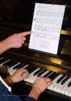

1980 - 2017
37 Jahre Kulturhaus Süderelbe e.V.
 |  |  |
Semesterbeginn am 01. Februar und am 01. September
Ein
neues Semester mit zahlreichen Möglichkeiten, sich unter fachkundiger
Anleitung kreativ zu betätigen, startet am 1. September´16. Zu zivilen
Preisen kann hier im Bereich bildende Kunst gemalt, gezeichnet, geschnitzt oder getöpfert werden. Im Musikbereich und im Bereich Bewegung findet ebenfalls wöchentlicher Unterricht statt. |
Alte Fähigkeiten neu zu entdecken oder mal etwas ganz Neues auszuprobieren, dazu gibt es im Kulturhaus Süderelbe jede Menge Gelegenheiten. Die familiäre Atmosphäre lässt Ängste schnell verschwinden, denn Menschen jeden Alters |
Kursdauer /Semester: 18 x 3 Zeitstunden, wenn nicht anders angegeben. Alle Kurse exkl. Materialien. Alle Kurse sind sowohl für Anfänger als auch für Fortgeschrittene geeignet. Eine Probestunde kann vereinbart werden. Eine Ermäßigung der Gebühren ist nach Absprache möglich. Das aktuelle Programmangebot finden Sie links unter "Kursprogramm 2016/17" |